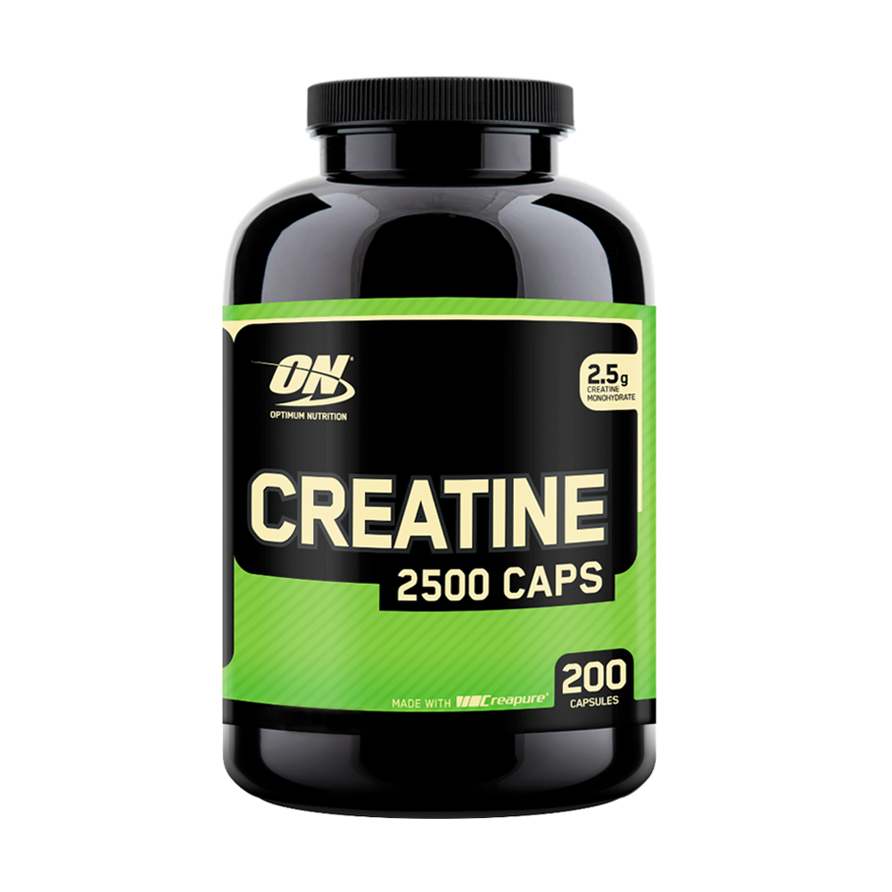
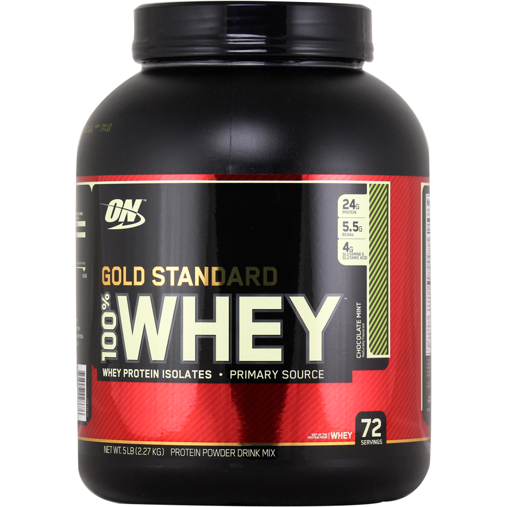
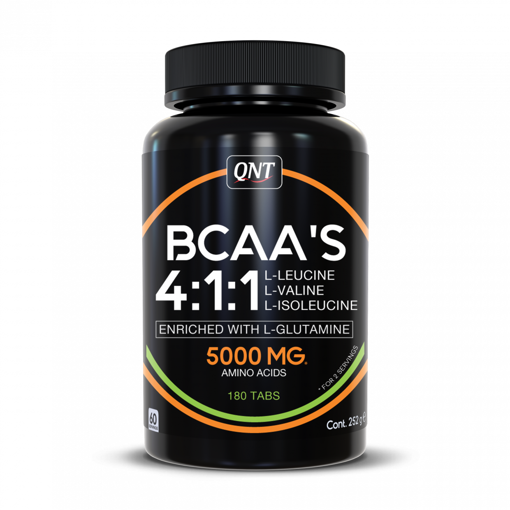
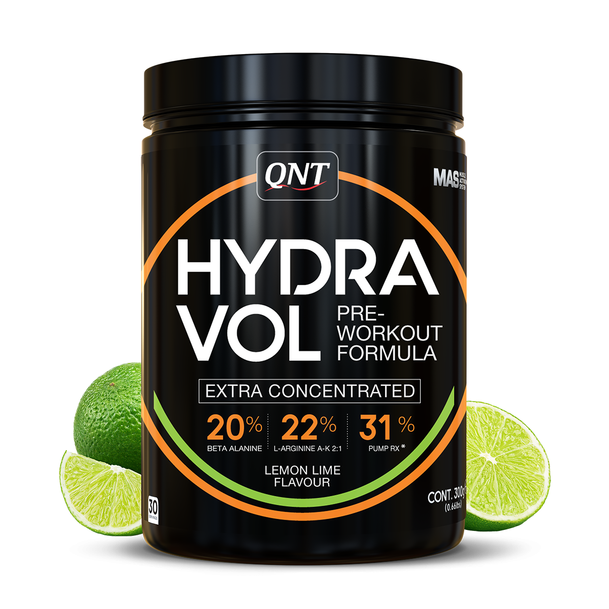
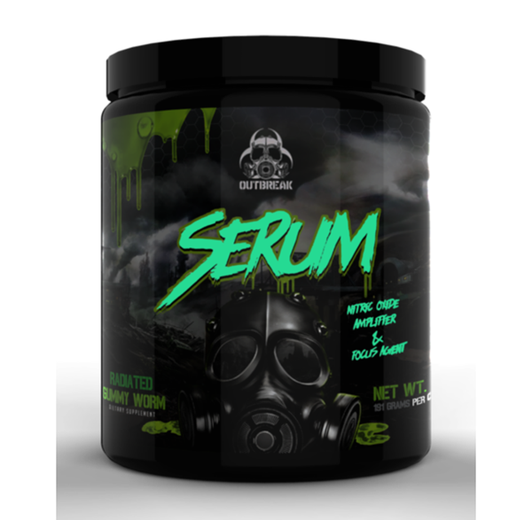
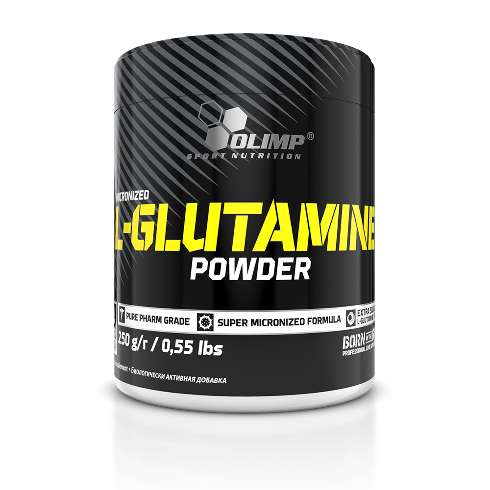
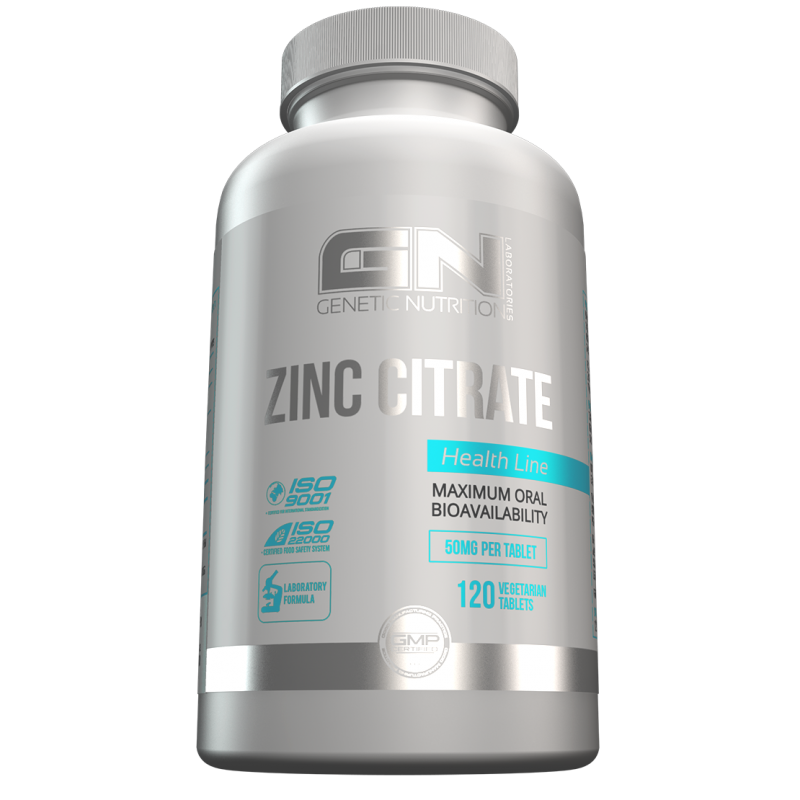
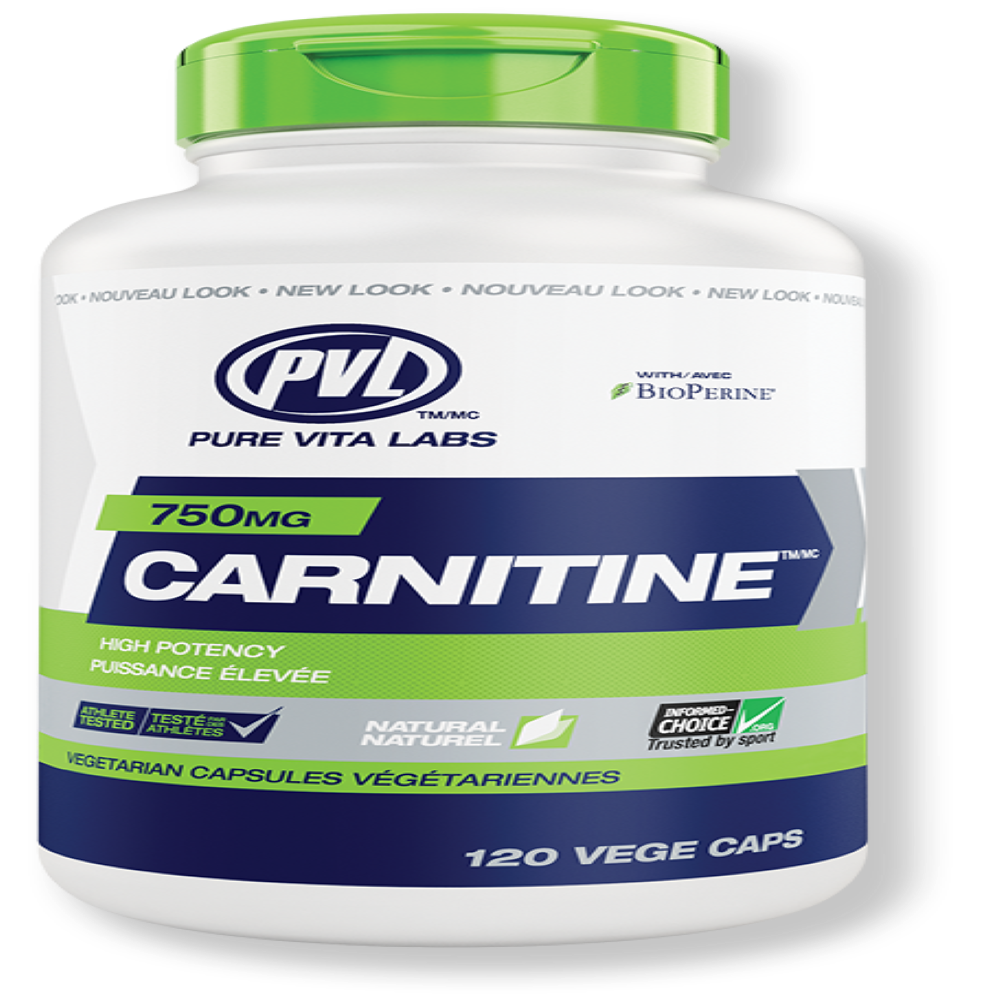
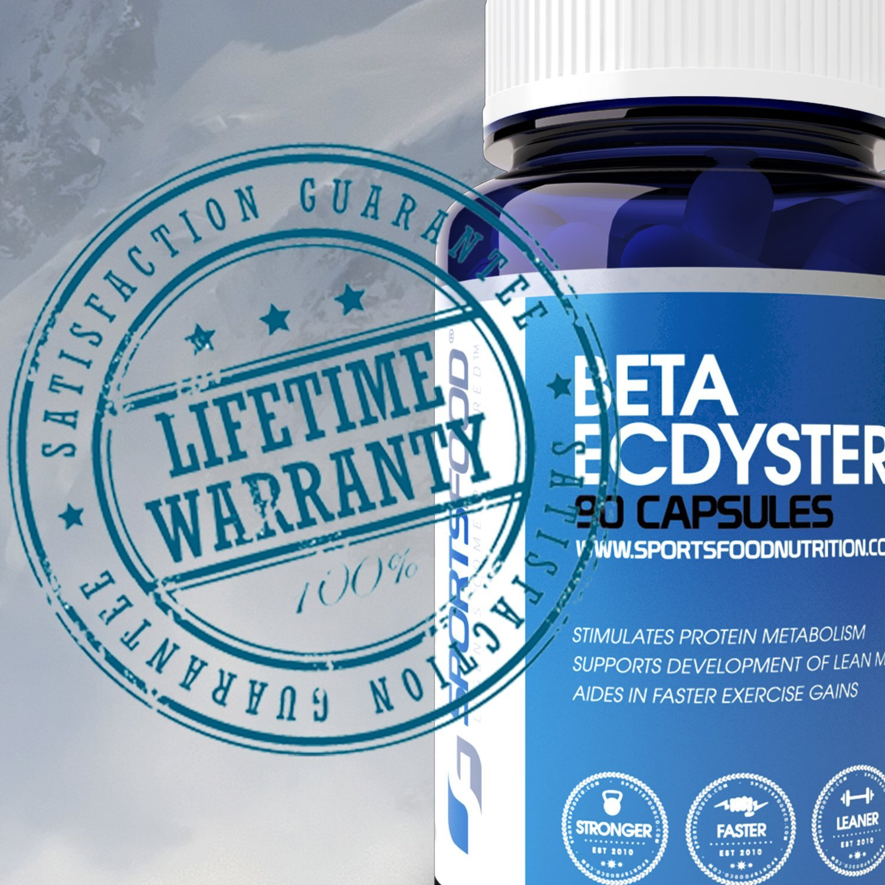
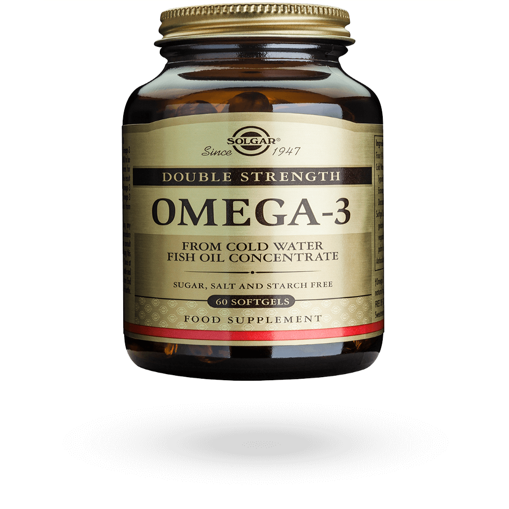

|  Creatine |  Whey Protein |  Casein
Casein |
 BCAAs |  Pre-Workout |  Nitric Oxide Boosters |  Glutamine |  ZMA |  L-carnitine |  Beta-Ecdysterone |  Omega-3 |
Confused by the multitudes of supplements on the market today and don't know where to begin? This handy list helps you zero in on the real difference makers.
No doubt you've seen the claims: "4,000 percent more potent than creatine monohydrate!"
In fact, so many far-fetched claims have been made for supplements in recent years—particularly the ones that help you build muscle and lose body fat—that many people have come to believe that all supplements are just expensive forms of snake oil. Others echo medical professionals who implore people to get their nutrients only from real food.
It isn't a bad idea to look to food first for your nutrients. The problem is, few people eat a large enough variety of foods to meet all nutritional requirements. Dieters limit or eliminate foods that contain vital nutrients.
Enter dietary supplements. Although food should always come first, supplements offer an effective alternative for getting nutrients that either aren't available in sufficient quantity in food or are in foods that you may not be eating.
Keep in mind, what's best for one bodybuilder may be entirely unsuitable for another. A trainee who finds it difficult to eat enough food to gain lean body mass could use a quality weight-gain powder but probably not a meal replacement or a basic protein powder.
Creatine is made from three amino acids: arginine, glycine and methionine. Anecdotal reports and scientific studies alike find that guys who take creatine gain a good 10 pounds or more of bodyweight and increase strength dramatically. Creatine works in a number of ways. For one, it increases the amount of fast energy in your muscles needed to perform reps in the gym. The more of this fast energy that’s available, the more reps you can do with a given weight, allowing you to get bigger and stronger in the long run. Creatine also draws more water into your muscle cells, placing a stretch on the cell that increases long-term growth. Most recently, creatine has been found to increase levels of insulin like growth factor-1 (IGF-1) in muscles, which is critical for stimulating growth.
How to maximize its effects:Take 2-5 grams of creatine in the form of creatine monohydrate, creatine malate, creatine ethyl ester or creatine alpha-ketoglutarate with your protein shake immediately before workouts. This will help keep your muscles saturated with creatine, producing the rapid energy they need to perform more reps. Then consume another 2-5 grams with your postworkout shake (in addition to 40-100 grams of fast-digesting carbs), a time when creatine will be rapidly taken up by muscle cells and the boost in IGF-1 levels will help prompt further growth. On days when you don’t train, take 2-5 grams of creatine with a breakfast that contains carbohydrates.
Whey tops the list of mass-gain supplements because it’s the most crucial for pushing protein synthesis. Whey is a milk protein that has a high level of branched-chain amino acids (BCAAs, No. 4 on our list). Bottom line: Whey takes the crown because it digests fast and gets to your muscles rapidly to start building muscle. Whey also contains peptides (small proteins) that increase blood flow to the muscles. This is why we always recommend consuming whey protein immediately after training.
How to maximize its effects:Take 20 grams of whey protein powder in the 30 minutes before working out, and take 40 grams within 60 minutes after training. Also consider taking 20-40 grams of whey immediately upon waking every morning to kick-start muscle growth. Your best bet is to choose a whey powder that contains whey protein hydrolysates (whey protein broken down into smaller fragments for faster digestion) or whey protein isolate.
The other milk protein, casein, squeaks in just under whey. Casein has always played second fiddle due to its very slow digestion rate, yet this makes it ideal as a pre-bedtime snack because it prevents catabolism while you sleep by emptying slowly and steadily. Casein also makes you feel less full, which makes it a great snack for those who want to pack on muscle mass. And new research finds that casein gives whey a run for its money – when it’s taken postworkout, casein boosts muscle protein synthesis much like whey does. It’s even suggested that a whey and casein protein shake taken after training increases muscle growth better than either protein taken alone.
How to maximize its effects:Choose a casein protein that contains micellar casein (the slowest-digesting casein you can buy) and take 20-40 grams right before going to bed. After workouts, add 10-20 grams of casein to your whey protein. Also, use 20-40 grams of casein in your protein shakes between meals.
The term branched-chain amino acids refers to leucine, isoleucine and valine, the absolute most important amino acids for repairing and building muscle tissue. Leucine is the most critical of the three, as research shows that it can stimulate muscle protein synthesis on its own. Yet it’s still best to take all three together, since they work in synergy to provide a multitude of benefits, including muscle growth, increased energy during workouts, the blunting of cortisol (a catabolic hormone that inhibits testosterone and increases muscle breakdown) and decreased delayed-onset muscle soreness.
How to maximize their effects:Take 5-10 grams of BCAAs with breakfast, as well as in your pre- and post-workout shakes. Look for BCAA products that provide leucine at a ratio of 2:1 per dose of isoleucine and valine. For example, if you take a 5-gram dose of BCAAs, about 2.5 grams should be from leucine, 1.25 grams from isoleucine and 1.25 grams from valine.
Most people take pre-workout for performance reasons or to simply feel better and less zonked when working out. Pre-workout supplements have been studied on a bunch of workout metrics, including strength, power, and endurance, as well as time it takes to fatigue, and perception of effort—or how hard it feels like you’re working during a given task. For those reasons, people may choose to take pre-workout before a variety of workouts, from trying to increase their one-rep max on the back squat, power through an interval-heavy running workout, or simply have enough gas left in the tank to crank out the final burpee in a HIIT class.
How to maximize their effects:Take 1-2 grams of beta-alanine or carnosine immediately before and after every workout in addition to your shakes and creatine. On non-workout days, take 2 grams with breakfast, along with creatine.
Nitric oxide (NO) is a molecule found throughout the body that’s involved in multiple processes. The one that bodybuilders are most interested in is its ability to dilate blood vessels, which allows more blood flow to the muscles for enhanced delivery of oxygen, nutrients, anabolic hormones and water (blood is mostly water). This gives you more energy during your workout, an enhanced muscle pump, and better muscle recovery and growth after the workout. NO boosters don’t provide NO, but rather the amino acid arginine, which is readily converted to NO in the body. Research has found that subjects who were given arginine increased muscle strength and growth and lost bodyfat.
How to maximize their effects:Take an NO booster that provides 3-5 grams of arginine in the form of L-arginine, arginine alpha-ketoglutarate, arginine ethyl ester or arginine malate. Also, consider NO boosters that provide ingredients such as citrulline, Pycnogenol, and American ginseng, which enhance arginine’s ability to increase NO. Take one dose at each of the following times: in the morning before breakfast, 30-60 minutes before training, immediately after training and 30-60 minutes before bedtime. When possible, take each dose without food and consider combining it with 500-1,000 mg of vitamin C, which can help maintain levels of NO for longer.
This amino acid has been a favorite of bodybuilders for decades because it’s central to muscle function and is one of the most plentiful aminos found in the human body. Glutamine provides numerous bodybuilding benefits, such as aiding muscle growth by increasing levels of leucine in muscle fibers, helping decrease muscle breakdown and bolstering the immune system, which helps prevent you from getting sick and missing workouts. Glutamine taken before workouts can help decrease muscle fatigue and boost growth hormone levels. In addition, recent research shows that glutamine might also play a role in fat loss by increasing the amount of calories and fat burned at rest and during exercise.
How to maximize their effects:Take 5-10 grams of glutamine in the morning with breakfast, with your pre- and post-workout shakes, and with your nighttime snack.
ZMA is a combination of zinc, magnesium aspartate and vitamin B6. It’s an important supplement because hard-training athletes such as bodybuilders are often deficient in these critical minerals, which are important for maintaining hormone levels and aiding sleep (essential for recovery). Intense training can compromise levels of testosterone and IGF-1. In fact, one study found that athletes who took ZMA significantly increased their levels of testosterone and IGF-1 during eight weeks of training, while those who took a placebo experienced a drop in both T and IGF-1. Naturally, boosting testosterone and IGF-1 can make huge impacts on muscle gains.
How to maximize their effects:Use a ZMA product that provides about 30 mg of zinc, 450 mg of magnesium and 10.5 mg of vitamin B6, and take it 30-60 minutes before bedtime without any food or calcium. Taking ZMA on an empty stomach will enhance its uptake and utilization and improve your sleep quality for optimal recovery.
Besides being a popular fat-loss supplement, carnitine is now known to enhance muscle growth through a number of mechanisms, all of which are supported by clinical research. For one, carnitine can increase blood flow to muscles, which means it provides similar benefits to NO boosters. It also increases testosterone levels postworkout and the amount of T receptors inside muscle cells, which allows more testosterone to stimulate more growth. In addition, carnitine supplements have been found to increase levels of IGF-1. Add all these benefits together and you have the potential to gain enormous amounts of muscle.
How to maximize their effects:Take 1-3 grams of carnitine in the form of L-carnitine, acetyl-L-carnitine or L-carnitine-L-tartrate with breakfast, your pre- and post-workout shakes, and nighttime meals.
Beta-ecdysterone is a phytochemical found in plants such as spinach, where its main function is to protect the plant from insects. Russian scientists discovered many years ago that beta-ecdysterone has anabolic properties. In fact, it’s similar in structure to hormones found in insects and crustaceans. Yet beta-ecdysterone doesn’t behave like a hormone in the body, but rather works by stimulating protein synthesis and therefore muscle growth. Anecdotal reports suggest that it’s very effective for producing increases in both muscle size and strength.
How to maximize their effects:To get the most out of beta-ecdysterone, make sure you get a high enough dose and take it frequently throughout the day. Look for products that supply about 100 mg of beta-ecdysterone and take it with meals in the morning, before and after workouts, as well as with lunch and dinner, for a total of 400-500 mg per day.
If you don't eat fatty fish at least three times a week, you'll be deficient in omega-3 fatty acids. Studies suggest that's the case with about 80 percent of people. Since the brain is composed of 40 percent DHA, one of the omega-3s, a long-term lack may cause aberrations in brain neurotransmitter function, resulting in depression and aggression.
How to maximize their effects:Regardless when you take your fish oil supplement, it's important to take it alongside a meal to maximize its absorption in the body. In particular, taking fish oil with a good source of fat can increase the bioavailability of omega-3 fatty acids and enhance their effectiveness ( 8 , 9 ).